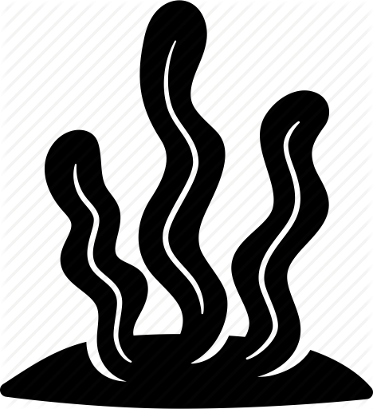

<nav class="navbar navbar-expand-lg navbar-dark bg-primary">
  <a class="navbar-brand font-fancy" href="#" > AquaMI</a>
  <button class="navbar-toggler" type="button" data-toggle="collapse" data-target="#navbarSupportedContent">
    <span class="navbar-toggler-icon"></span>
  </button>
  <div class="collapse navbar-collapse" id="navbarSupportedContent" >
    <ul class="navbar-nav ml-auto">
        <li class="nav-item">
            <a class="nav-link" routerLinkActive="active" [routerLink]="['/home']" >
              <i class="fa fa-home"></i> Home</a>
          </li>
      <li class="nav-item">
        <a class="nav-link" routerLinkActive="active" [routerLink]="['/test']" >
          <i class="fa fa-eyedropper"></i> Test</a>
      </li>
      <li class="nav-item">
        <a class="nav-link" routerLinkActive="active" [routerLink]="['/ferti']">
          <i class="fa fa-leaf"></i> Fertilizzazione</a>
      </li>
      <li class="nav-item">
        <a class="nav-link" routerLinkActive="active" [routerLink]="['/manutenzione']">
          <i class="fa fa-wrench"></i> Manutenzione</a>
      </li>
    </ul>
  </div>
</nav>
